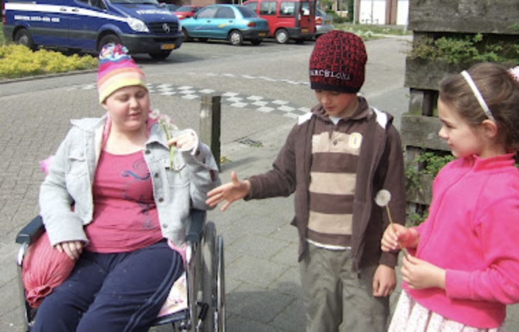
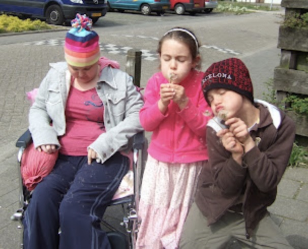

Somber
17 Apr 2007
Last Tuesday’s MRI shows two things: the largest tumor area has shrunk; the smeary areas have grown. This is not post-radiation swelling or dead tissue. From the report (translated from the Dutch):
A comparative scan was taken elsewhere on October 27, 2006. The right frontal extra-axial mass is no longer visible. There is however now a visible lesion that extends from the right frontal area via the corpus callosum to the left frontal area. The lesion shows nonuniform areas of contrast enhancement with a nonenhanced center suggesting necrosis. The lesion is heterogeneous and appears to consist of multiple foci. The scan is radiologically very suggestive of a glioblastoma multiforme.
The doctor said we have 3 options:
- Do nothing. We all know how that ends, likely within 3 months.
- Palliative chemotherapy. This extends lifespan, but only by a few months.
- Very heavy chemotherapy. There is a small, but existent, chance this will lead to a cure.
Our daughter and we chose option 3. She and I signed the consent form. Her first treatment is next Monday, April 23.
The Treatment Plan
There are two phases to treatment: the first contains 3 cycles; the second, 8. Each cycle lasts 4 weeks. In the first phase she receives cisplatinum through her port-a-cath (PAC) for 2 days in the hospital and oral etoposide for 21 days at home. Then she has a 1-week break.
In the second phase she receives vincristine and cyclofosfamide through her PAC: cyclofosfamide for two days per cycle, vincristine one day every week for three weeks, then a 1-week break.
Complications
There are several factors that will influence treatment trajectory. First and foremost is whether she can handle it psychologically. Second is her physical condition: her bone marrow may not be able to handle it. She will be at risk for infections; she may develop high fever. She will certainly be nauseated and throw up. Cisplatinum can affect kidney function; cyclofosfamide can cause bleeding in the bladder. Both are rare side effects and are not expected to occur. And it goes without saying that she’ll be taking lots of medications to ward off infection and protect against these side effects.
If her hemoglobin falls below 4.5, she’ll get a transfusion. If her white blood cell count falls under 1, she’ll get a transfusion. If her platelet count falls too low (“too low” is different for each person; they gauge it by gum bleeding or nosebleeds that don’t stop), she’ll get a transfusion. If anything falls too too low, including her absolute neutrophil count (ANC; it must stay above 1), treatment will have to be stopped.
Bloodwork
Last week’s bloodwork results:
Hemoglobin 6.9 (normal is 12-16)
Hematocrit 0.32 (normal is 0.36-0.47)
Erythrocytes 3.06 (red blood cells; normal is 4-5)
Leukocytes 3.0 (white blood cells; normal is 4.5-11)
Thrombocytes 105 (platelets; normal is 150-400)
ANC 2.38 (normal)Lunesta and Prozac
We’ve been given the OK to stop Prozac. Since she’s only taking 10mg per day, she doesn’t need to ramp down first.
We can’t just stop taking the Lunesta, however. Zopiclone is addictive in the manner of benzodiazopenes, the most famous of which is Valium. And in fact she’ll be taking Valium to get her off the Lunesta (not available in Europe) without withdrawal symptoms. Great. So much for all the marketing blah blah that Lunesta isn’t habit-forming.
She’ll take 1 mg Valium for two days, then 0.5 mg for two to three days, then stop.
Rehab
We’ve managed to reschedule our first rehab appointment to this Thursday now that next Monday has been appropriated by chemotherapy. I’m glad we could move it earlier and not later; once chemotherapy begins, she’ll be in sorry shape for vigorous physical exertion.
I am severely disappointed that the original plans for intensive rehab in the US didn’t go through. The past three months were the best months she’ll have for at least a year. She might have been able to regain considerably more functionality if she’d had intensive rehab instead of one hour a day. She might be walking now. And there’s no reason to expect that functionality to disappear again; who knows what the tumor will press on next, if it in fact continues to grow.
Rapid Progress
19 Apr 2007
Monday’s CIZ meeting has already produced results: we’ve been granted 14 to 19.8 hours of in-home help per week. I received the letter today; not an hour after I read it, the home health-care service called to set up an introductory home visit.
We met with the rehab doctor at Blixembosch today. That, too, has already produced results: my daughter’s right leg has been cast for a brace, the doctor has a meeting with the director of the associated school, and we’ve got an in-home appointment with an ergotherapist to advise us on a wheelchair and modifications to our home.
We also have a referral to an in-home physical therapist. Alas, with the onset of more chemo, Blixembosch feels she won’t be up to intensive rehab.
The Leg Brace
Because she hasn’t used her right leg for so long, her calf muscle has shortened and she cannot at this point bring her foot to a neutral position. This means that when she stands, her right knee bends backward. The brace will keep this from worsening and allow her to stand and (as she progresses) walk. As therapy helps to stretch her calf muscle, the heel in the brace can be lowered (presumably by making a new brace; I don’t know the details on this).
The School
My daughter has a HAVO-VWO recommendation from her Dutch school years. The Mytyl school associated with the rehab center provides only up to VMBO-t. We can either have her attend the Mytyl school anyway, where she will be out of the house and around agemates part of the day in an environment designed for children with a physical handicap, or enroll her in a regular high school and through them request in-home teaching at HAVO-VWO level.
Given the year she’s going to have, we prefer the Mytyl school. VMBO-t is equivalent to American high school (VWO, by comparison, is equivalent to American high school plus the first two years of college). I see no need for her to work at the hardest possible level while she’s battling cancer. A daily change of scenery and some new friends to help provide distraction seem more important.
Never a Dull Moment
20 Apr 2007
We had quite an eventful morning. The good news is that we’re already making profitable use of the home health-care organization’s service-on-demand feature: my daughter buckled and fell while we were pivoting her back into the wheelchair from the toilet. Neither of us was hurt, but I couldn’t get her back up off the floor. So I called Zuidzorg and they sent a very nice caregiver to help us.
This is the second time she’s buckled on me in the bathroom; I think it’s related to the slight step up from the bathroom to the hall. (A Dutch half-bath is slightly more than one square meter, just large enough for the toilet and your knees; there’s no getting a wheelchair into it.) Once she navigates that hurdle, all she has to do is turn and sit, but for her weakened right leg that 1-inch rise is quite a challenge. And I’m just not strong enough to hold her upright if her left leg buckles and she suddenly puts all her weight on me.
Until my husband returns, we’ll use the potty chair instead. We try to limit the potty chair to middle-of-the-night use—we want her to feel like a normal person, and a potty chair just screams “disabled”—but I won’t risk another bathroom fall, even though 98% of the time we do just fine.
My daughter’s stepmother, a drug company rep for Lunesta, let us know that at her dosage, my daughter shouldn’t experience any withdrawal symptoms and thus we shouldn’t need to use Valium. Sounds good to me! We halved my daughter’s last Lunesta pill and she took the second half last night. Tonight she’ll sleep unaided for the first time in nearly six months.
The insurance circus is finally over. (Famous last words.) We’ve had to take out a separate policy for her (a “buitenlandverzekering,” or travel insurance, oddly enough; she’s rather the opposite of a Dutch person traveling outside the Netherlands) until her residence permit is finalized. Fortunately, our insurer is backdating the policy to April 5, the day she arrived. It will cover all her major medical expenses in Holland. For € 95 a month, that’s a deal. In fact, it’s already paid for itself for the up to six months we’ll need it: her leg brace alone will cost € 513.
As it turns out, Dutch law stipulates that a foreigner cannot be covered under regular medical insurance until his or her residence permit is approved (I looked it up). So our insurance company wasn’t being difficult after all. In fact, I think it’s very generous of them to offer us the interim policy, knowing it will cost them (and big). Unlike for regular medical insurance, they have the right to refuse her for this policy.
I’m incredibly moved by how kind and helpful our other two children are. Today, for example, our son took solicitous care of his sister during lunch: opening the ketchup for her, picking up things that fell, making sure she had her vitamins. I let him know how proud of him I am. He is such a wonderful person.
Take No Prisoners
21 Apr 2007
I had a brief talk with my daughter this morning about the severity of her situation.
Me: You know, this thing you have—
Her: Cancer.
Me: Yeah, your brain tumor. It’s very serious.
Her: Yeah, I know.
Me: Most people don’t survive it.
Her: Really? [Eyes wide.] Well, I’m going to survive it.
Me: So I just want to make sure you know that even though they recommend this heavy-duty chemotherapy, they aren’t saying it will definitely cure you.
Her: Oh, yeah, I know. [Nods vigorously.]
Me: But you still want to do it.
Her: Yes. Definitely.
Me: Okay. And I remember what you said when we left the hospital: don’t let you quit even if you say you want to. We won’t let you quit.
Her: Good. I don’t want you to let me quit. Definitely do not let me quit.
Dandelions
21 Apr 2007
My daughter’s crazy about dandelions in the white puffy stage, the ones you can blow into the wind. On every walk we stop and pick a few for her to blow. Her brother and sister have gotten into the game, dashing here and there and running back with bouquets of them. Here we are on our way to the store this afternoon:
 
We’re Off to See the Wizard
22 Apr 2007
We leave for the hospital and the first round of chemotherapy tomorrow morning. We’ll be there at least one night, possibly two. Internet access at the hospital is sketchy, so I won’t be posting again until we get back home.